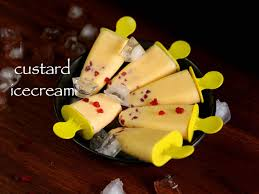

Ingredients
- Milk
- Custard Powder
- Vanilla essence
- Dry fruits (Almonds, raisin)
- Sugar
Instructions
- Boil the milk on high temperature and then stir it properly on low temperature until it becomes 1/4th from its original amount.
- Take the custard powder and mix it in one bowl of cold milk, Remember to not leave any lump
- Start to mix that custard paste into the milk on stove and stir it well.
- Mix sugar according to the taste and stir it well
- Finally turn off the stove and add CRUSHED dry fruits.
- Let the Ice-cream paste cool down and put it into the freezer for atleast 5 hours.
- ENJOY your Ice-cream

Additional Information
Recipe Timeline
| Steps |
Time |
| Step-1 |
10 minutes |
| Step-2 |
2 minutes |
| Step-3 |
1 minute |
| Step-4 |
5 minutes |
| Step-5 |
1 minute |
| Step-6 |
60 minutes |
| Step-7 |
300 minutes |